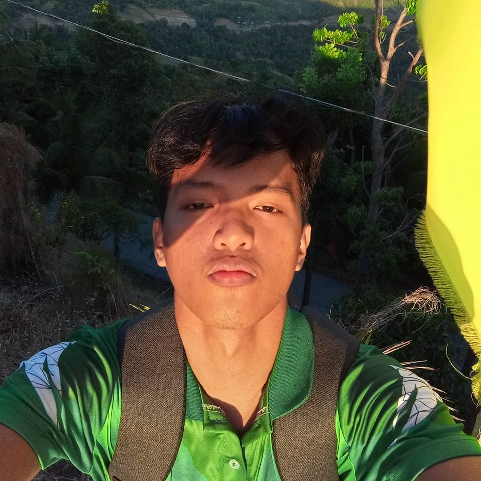
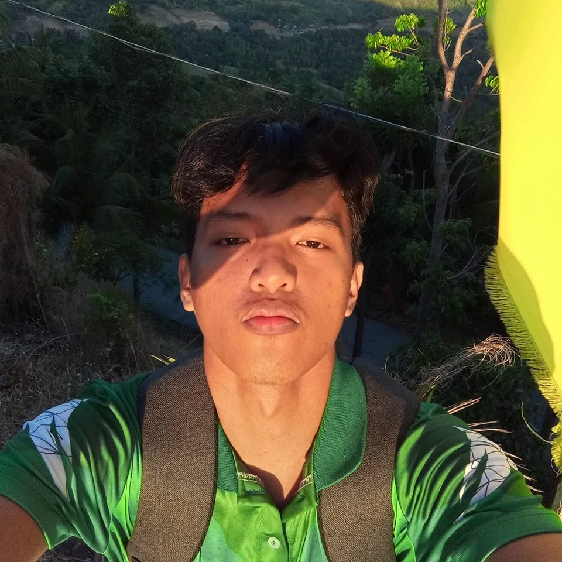

My Life Story

Childhood
I was born in year 2005 in Kabalalahan. I always had a curious mind and a love for exploring new things. I spent a lot of time outdoors, which sparked my passion for nature and adventure. My family was very supportive, and they encouraged me to pursue my interests, whether that was through sports, reading, or trying out new hobbies. Those early experiences shaped the person I am today, helping me become more open-minded and eager to embrace new challenges..
Teenage Years
During my teenage years, I was deeply involved in Dancing. I also started discovering more about myself and what I was truly passionate about. It was a time of personal growth, where I learned the importance of balance between school, friendships, and pursuing my dreams. I faced challenges like most teenagers, but they taught me resilience and how to adapt to new situations.
Adulthood
In my adulthood, I focused on developing my career and expanding my skill set. I’ve worked hard to build a strong foundation in my course in school, and over time, I’ve learned the value of persistence and adaptability. Today, I’m proud of my current achievements, whether it's personal or puchu lang and I’m continuously striving to improve myself. Whether it's through my dance skills evem though they cant see it, I’m excited for the future and what’s yet to come


 
